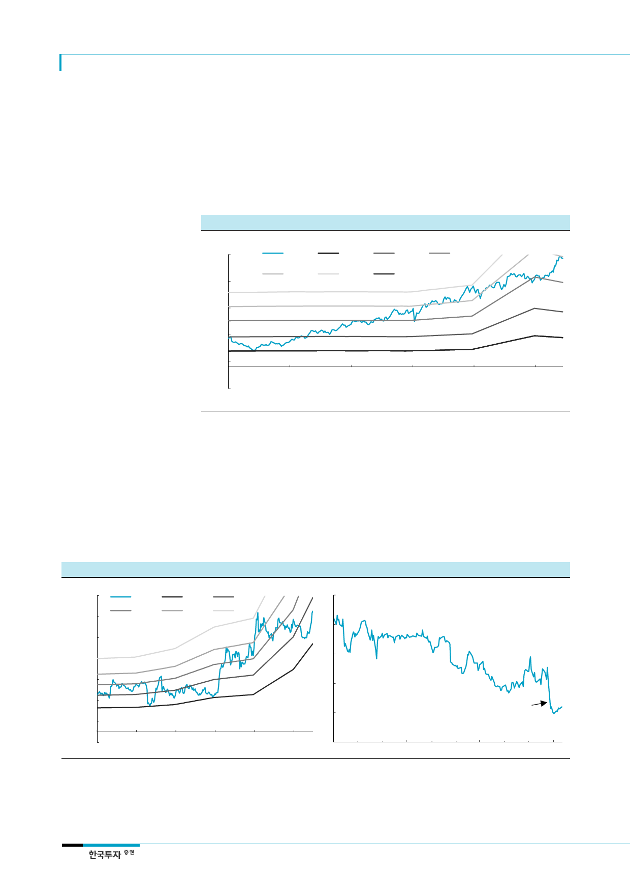

삼성바이오로직스(207940)
CMO와 바이오시밀러 업체의
valuation 프리미엄과
꾸준한 re-rating에 주목
Lonza와 셀트리온의 주가는 지난 5년간 전방산업에 대한 시장의 높은 기대감으로 re-
rating이 지속됐다. Lonza는 바이오의약품 시장 확대에 따른 CMO 수요증가와 시장 내
입지에 대한 프리미엄, 셀트리온은 바이오시밀러 시장 성장과 지속적인 제품 출시 및 판
매 기대감에 기인한 것으로 사료된다. 특히 Lonza는 안정적 이익 성장이 동반되면서 지난
5년간 큰 부침없이 주가가 4배 이상 상승한 바 있다. 동사 주가의 장기적인 흐름을 가늠
해볼 수 있는 대목이다.
[그림 6] Lonza 12MF PBR 밴드
(CHF)
210
160
주가
3.0x
0.8x
3.7x
1.5x
0.8x
2.3x
110
60
10
(40)
2012
2013
자료: Bloomberg, 한국투자증권
2014
2015
2016
2017
바이오시밀러 업체들은 주가
변동성이 상대적으로 커
CMO 업체들과는 달리 바이오시밀러 업체들의 주가는 임상승인 결과, 특허소송 등 다양한
외부변수에 노출되어 있어 변동성이 클 수 밖에 없다. 셀트리온은 과거 악의적인 루머 등
으로 주가가 여러 번 급락한 바 있으며 미국의 Coherus Biosciences 역시 올해 6월
Amgen의 호중구 감소증 치료제 뉴라스타의 바이오시밀러 CHS-1701이 FDA로부터 승
인이 거절되면서 주가가 고점 대비 약 30% 급락하기도 했다. 그러나 이러한 대외악재들
속에서도 바이오시밀러 업체들의 valuation이 여전히 시장 대비 높은 프리미엄을 받고 있
어 바이오시밀러에 대한 주식시장의 높은 관심과 기대감은 유효한 것으로 보인다.
[그림 7] 셀트리온 12MF PER 밴드
(원)
130,000
주가
23x
35x
110,000
45x
55x
70x
90,000
70,000
50,000
30,000
10,000
(10,000)
2012
2013
자료: Quantiwise, 한국투자증권
2014
2015
2016
[그림 8] Coherus Biosciences 최근 주가 추이
(달러)
35
30
25
20
FDA 승인거절
15
2017
10
Sep-16
Dec-16
자료: Bloomberg, 한국투자증권
Mar-17
Jun-17
8